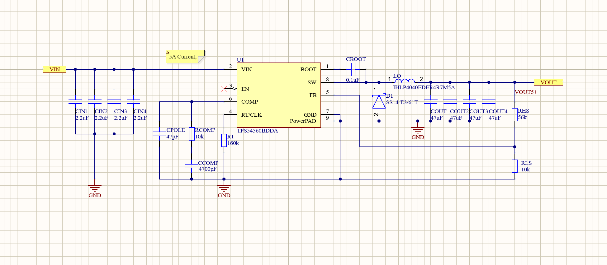
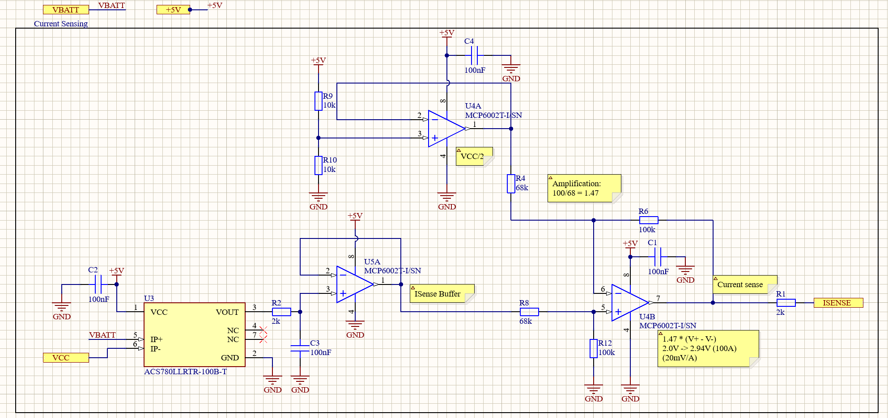
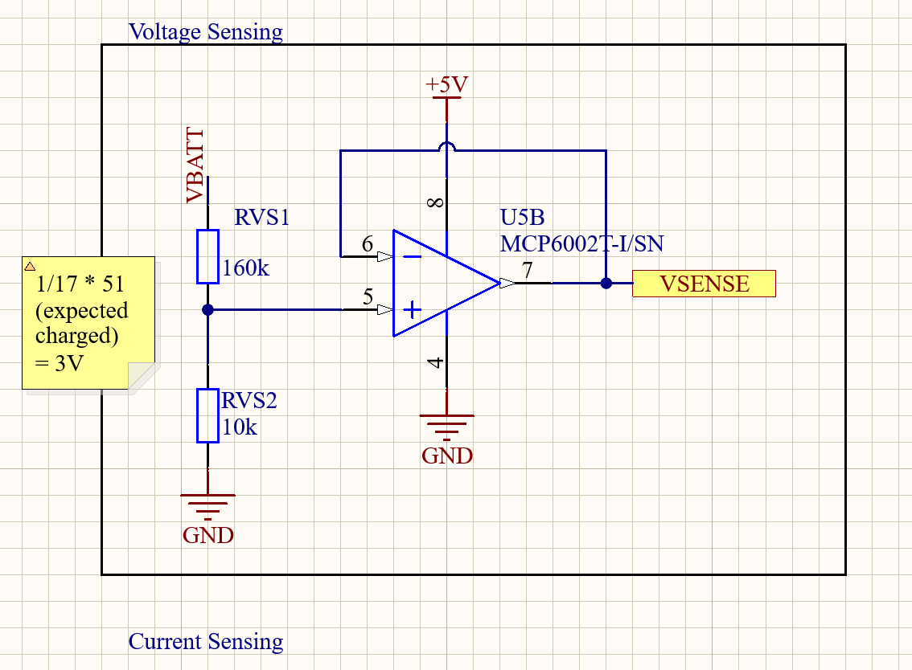
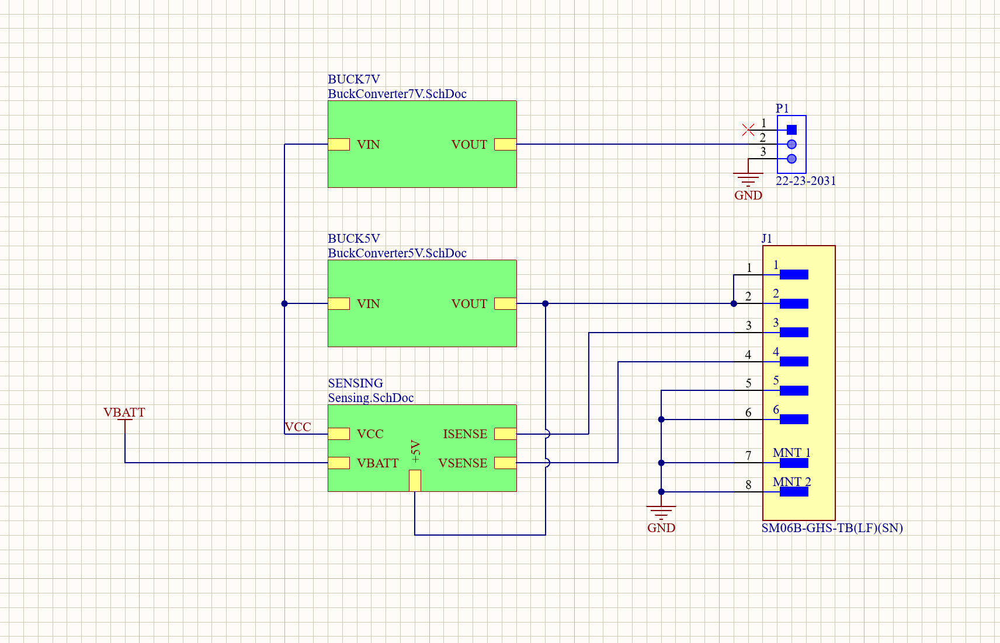
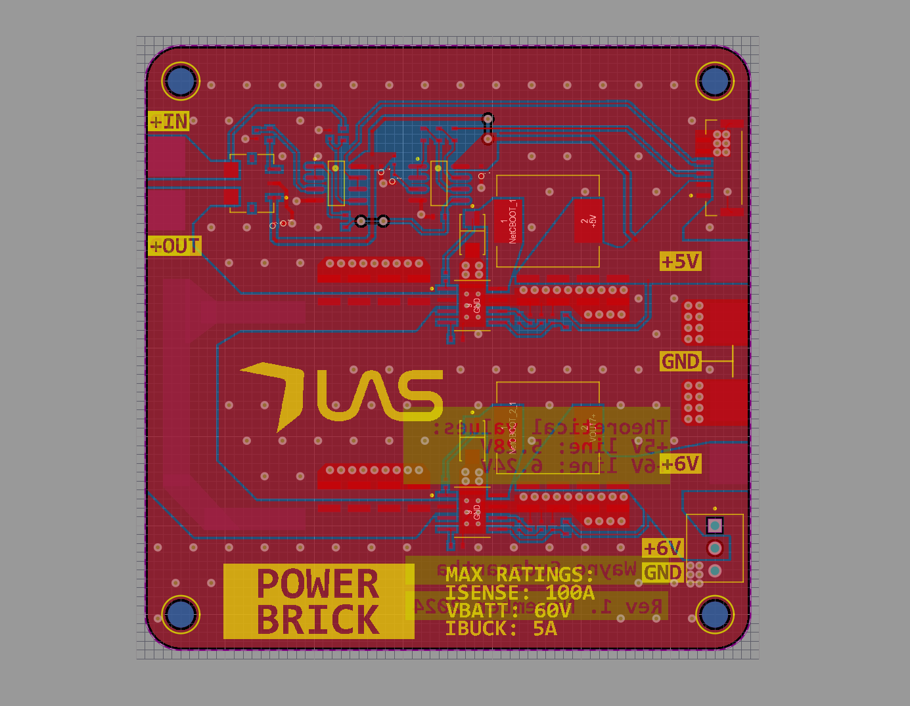
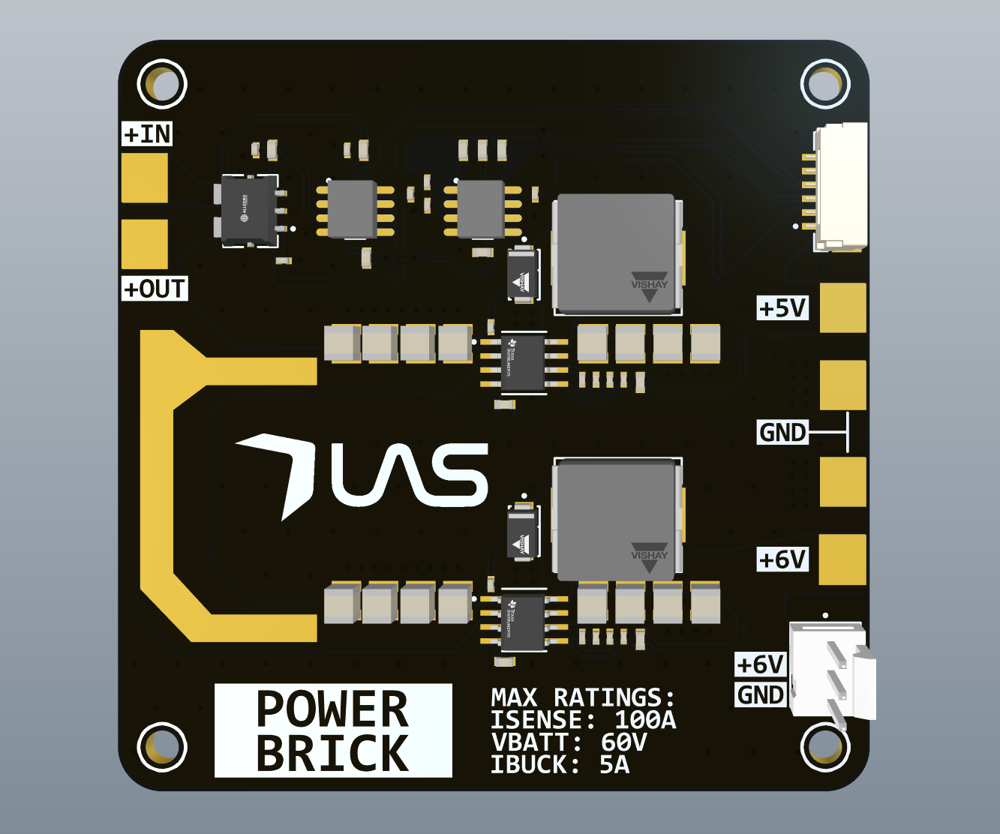
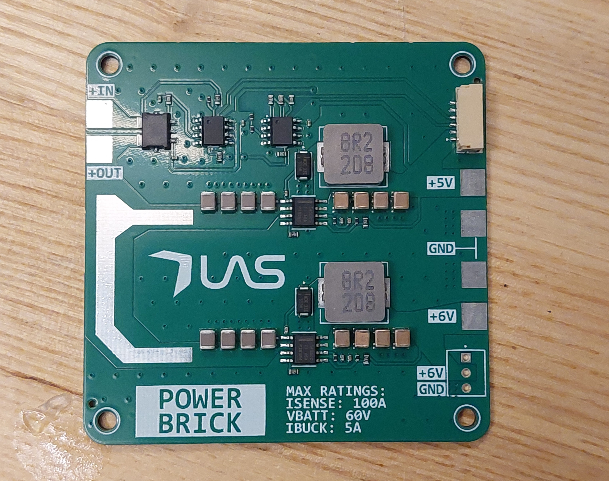

Schematics




PCB



This project is a power distribution board designed to step down a 50.4 V LiPo battery pack and supply regulated power to an aircraft flight controller (5 V) and servos (6 V). While its main role was regulation, the board was also used to distribute raw battery power to four motor ESCs (20 A each). For this application, solder was applied over exposed copper areas to increase current-carrying capacity and reduce trace resistance.
The board includes battery voltage sensing and Hall-effect current measurement, with a differential amplifier used to maximize the usable current measurement range and use the full analog reading range. Although each downstream flight component draws up to about 1 A, the buck converter outputs were designed for 5 A to maintain a comfortable safety margin.
Buck converter component value selection was done with the help of TI WEBENCH Designer. For current sensing, I closely followed the ACS780 datasheet and layout recommendations. In particular, input current was routed perpendicular to the IC as specified, and copper pours were made as large as possible to reduce resistance and maximize current capacity.
I considered component parasitics throughout the design process, and all supporting components were selected to meet the recommendations in the TPS54560 buck converter datasheet. I made sure that the ground plane was mostly solid and no traces were blocking current return paths. During routing, I took extra care to minimize the size of high-frequency and high-power current loops to reduce EMI.
Analog signal integrity was also a priority. I kept sensitive traces short and routed away from high-energy components such as inductors and switching nodes. I also added decoupling capacitors throughout the board to improve power stability. I simulated the circuit in LTspice to verify correct operation before moving into PCB layout and fabrication.
The board was designed to be assembled by JLCPCB, which influenced several component selection decisions. Since non-standard component values incur additional costs, I adjusted the design to minimize unique part values by using equivalent circuits and close-match components where the application allowed. This reduced manufacturing costs by roughly $50 with an acceptable impact on performance.
Testing was performed using a benchtop power supply, oscilloscope, and a high-power resistive load. Under a 2 Ω load (approximately 2.5–3 A, or about 50% of the theoretical maximum), the output ripple measured around 100 mV peak-to-peak. This result was acceptable for this application, but it could have been better. No significant overheating was observed.
In hindsight, the design could be improved by reducing the overall board size and further optimizing the layout to improve power integrity, particularly around the switching sections. I would also add more layers to the board to further increase the board's current capacity. A future revision would also include additional transient protection and more deliberate consideration of startup behavior.





